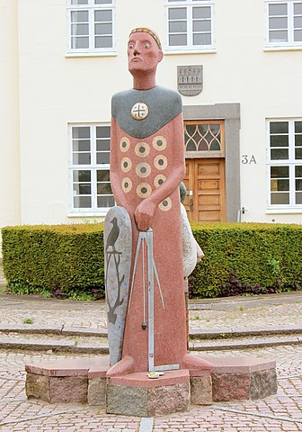

48077330 Esbern Asserson, Hvide, Snare
Korsriddare. Blev ca 77 år.
Far:
Mor:
Född:
omkring 1127 Fjenneslev, Sörö, Danmark. [1]
Död:
omkring 1204 Säby gård, Holbeck, Danmark. [1]
Barn med 48077331 Helen Guttormsdatter (1165? - >1230)
Barn:
Noteringar
Esbern Snare
Absalon Hvides bror
Esbern Snare, född 1127, död 1204, var en dansk storman. Han var bror till ärkebiskop Absalon Hvide och gift med Helena Guttormsdotter, dotter till en svensk jarl, Guttorm jarl. Helena hade sedan med kung Valdemar Sejr av Danmark en utomäktenskaplig son Knut, sedermera hertig av Reval i Estland. Wikipedia
Född: 1127, Fjenneslev, Danmark
Död: 1204, Kalundborgs kommun, Danmark
Make/maka: Helena Guttormsdotter
Barn: Ingeborg av Kalundborg
Föräldrar: Asser Rig, Inger Eriksdatter
Syskon: Absalon Hvide
Personhistoria
Årtal
Ålder
Händelse
1127?
Födelse omkring 1127 Fjenneslev, Sörö, Danmark [1]
1140?
Barnbarnet 12019332 Strange Andersen Ulfeldt föds omkring 1140 Danmark [2]
1151
Fadern 96154660 Asser Rig Skjalmsøn Hvide dör 1151 Sorø kloster, Danmark [1]
1157
Modern 96154661 Inger Eriksdotter dör 1157 Fjenneslev, Sörö, Danmark [1]
1165?
Partnern 48077331 Helen Guttormsdatter föds omkring 1165 Sverige
>1186
Barnbarnet 12019332 Strange Andersen Ulfeldt dör efter 1186 Danmark [3]
1204?
Död omkring 1204 Säby gård, Holbeck, Danmark [1]
Bilder

Källor
[1]
Anette Guldager Boye
[2]
Flemming Allan Funch
[3]
Skeel, Schaffalitzky og Ahlefeldt